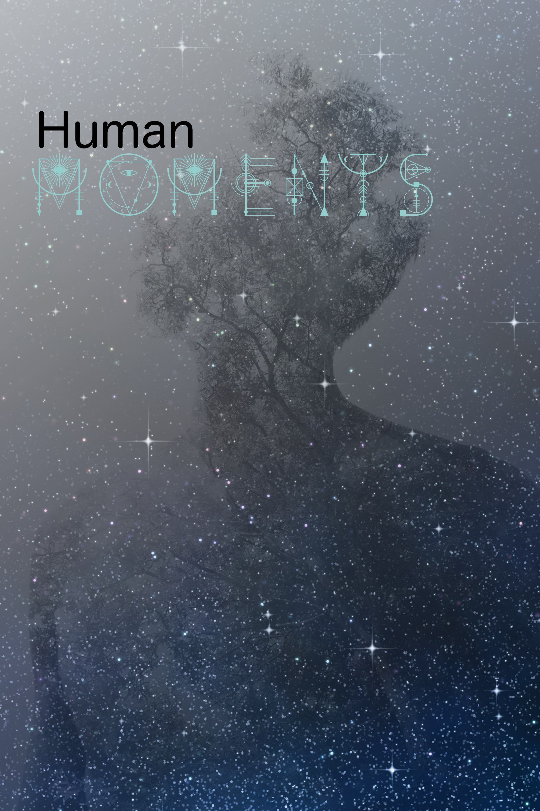
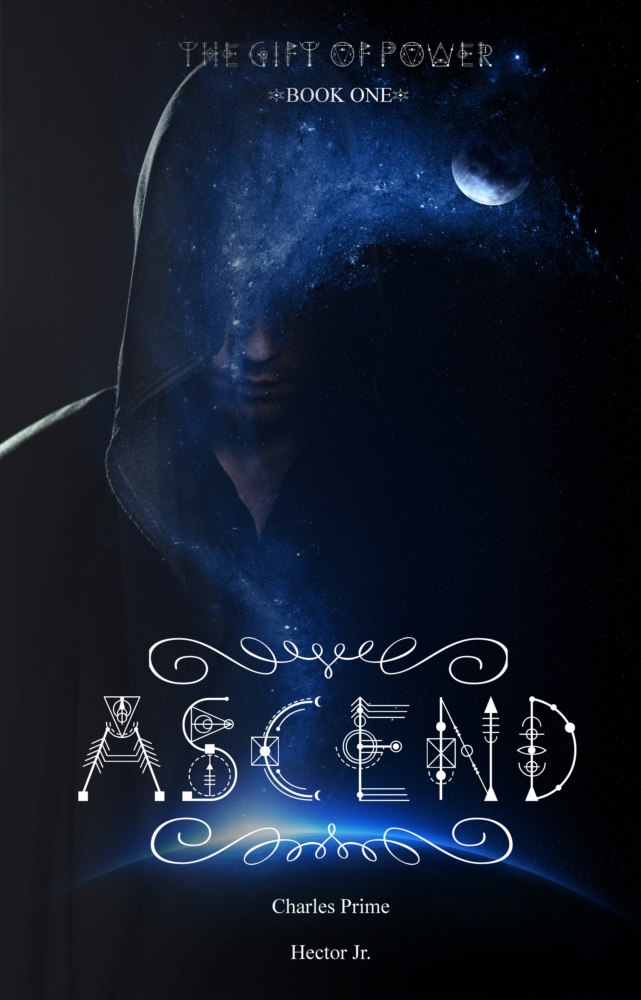

| Completed Works | |
|---|---|
| With the supernatural and human world vying for war, Raizel is forced to answer the call of the Elders' and leaders of the human race. A prophecy uttered long ago to not just Raizel, but to his siblings, that the Earth would be destroyed by Lucius' and Terion, the progenitors of all life is coming to fruition. As events and moments lead up to the end, Michaeli, Raido, Emeris, Roel, and two of Raizel's siblings join together to save all life on Earth, but it becomes apparent that it's not possible. In the end, the only choice they have is to survive. | |
| Works in Progress | |
|  | After the fast-paced events left Adian more inhuman, without a family and his normal life. He has returned to narrate his story, as once again strange events and circumstances begin to plague him while seeking to find his place in the world. |
|  | Adian, a young-adult living in an old trailer home, kept his powers a secret from everyone. From a very young age strived to live a normal human life. Yet, juggling school, a new job, and society put him in unfortunate events that forced his hand. |
|
A heart-breaking and soul-crushing tragedy sends Lucario into hiding, as the law picks up the remains of the aftermath. A year passes, before the young adult decides to return, and try to salvage the life he built in the small little town in Texas. That day awakened a new part of him, and as he comes to terms with what his awakening is responsible for, the past begins to reveal answers, and the future shows the possibility of the hope he is trying to find. |